Recent advances in Multimodal Large Language Models (MLLMs) have enabled automated generation of structured layouts from natural language descriptions. Existing methods typically follow a code-only paradigm that generates code to represent layouts, which are then rendered by graphic engines to produce final images. However, they are blind to the rendered visual outcome, making it difficult to guarantee readability and aesthetics. In this paper, we identify visual feedback as a critical factor in layout generation and propose Visual Feedback Layout Model (VFLM), a self-improving framework that leverages visual feedback iterative refinement. VFLM is capable of performing adaptive reflective generation, which leverages visual information to reflect on previous issues and iteratively generates outputs until satisfactory quality is achieved. It is achieved through reinforcement learning with a visually grounded reward model that incorporates OCR accuracy. By rewarding only the final generated outcome, we can effectively stimulate the model’s iterative and reflective generative capabilities. Experiments across multiple benchmarks show that VFLM consistently outperforms advanced MLLMs, existing layout models, and code-only baselines, establishing visual feedback as critical for design-oriented MLLMs. Our code and data are available at https://github.com/FolSpark/VFLM.
The emergence of Large Language Models (LLMs) [1, 9, 51] and Multimodal Large Language Models (MLLMs) [18, 32, 4, 42] has unlocked new possibilities for automated content generation, particularly for structured visual layouts. By generating structured representations (e.g., SVG code, custom JSON) [11, 52, 8, 35] that define the position, size, and style of each element [22, 20], LLMs can translate natural language descriptions directly into complex designs such as typographic posters, social media graphics, and documents. MLLMs further enhance this by leveraging cross-modal understanding, allowing generation to be conditioned on both text and visual inputs.
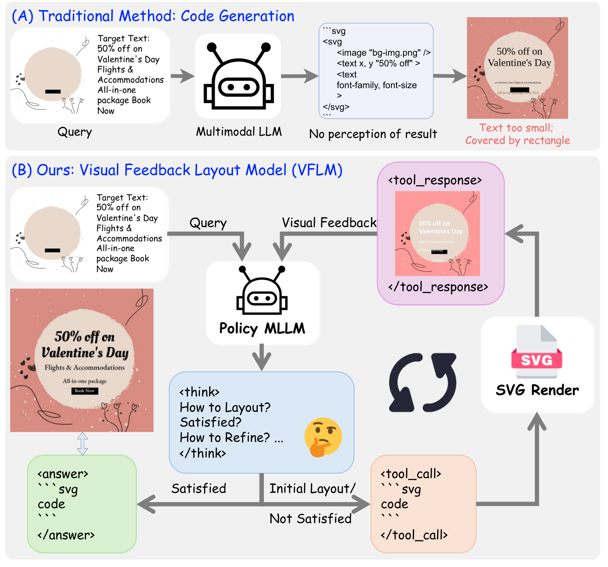
However, existing methods are limited to the code-only paradigm and can only generate codes for layout without considering visual feedback. For instance, COLE [22] and OpenCOLE [20] leverage LLMs to generate typography JSON files, while LGGPT [57] produces customized layout output formats, which are then composed into the final images by a graphic renderer. As shown in Fig. 1(A), while these models can produce layout structures that meet formal specifications, they remain unable to perceive the visual outcomes of their designs. Effective text layout design, however, depends on visual properties such as aesthetic balance, readability, and image–text coherence, which cannot be fully encoded by programmatic rules. Consequently, a model may generate syntactically valid SVG layouts that still suffer from overlapping elements, poor contrast, or misaligned components.
Recent advances in LLMs [9, 21, 32, 12] research demonstrate that reflection, backtracking, and self-validation mechanisms can substantially improve performance on complex reasoning tasks. Moreover, Reinforcement Learning (RL) [34, 38, 40] techniques have proven effective in activating the reflective reasoning capabilities of LLMs. This motivates our core research question: Can such reflection capabilities be transferred to text layout generation to overcome the visual perception gap in existing approaches? We argue that the solution lies in incorporating visual feedback into the text layout generation process, leveraging MLLMs’ inherent cross-modal understanding capabilities. As illustrated in Fig. 1, models should not only generate layout code but also perceive the rendered results to evaluate quality, diagnose visual issues, and devise optimization strategies through iterative refinement.
In this paper, we propose Visual Feedback Layout Model (VFLM), a novel self-improving framework for text layout generation that establishes a closed-loop process guided by RL. As shown in Fig. 1, VFLM first generates initial SVG layout code, which is rendered into a visual image. This rendered image is fed back to the same model for visual inspection and reflection. If issues are identified or the layout is unsatisfactory, VFLM generates revised code and repeats the process, creating a continuous loop of “generation, rendering, reflection and refinement” until a satisfactory layout is achieved.
VFLM utilizes a two-stage training pipeline. Firstly, we construct a multi-stage generation-reflection-refinement trajectory dataset by distilling advanced MLLMs, followed by Supervised Fine-Tuning (SFT) to endow model the ability of iterative generation. Secondly, we employ RL to enhance the model’s reflective capabilities. We utilize a reward model trained to evaluate layout quality holistically and incorporate text accuracy via Optical Character Recognition (OCR). While recent research on Agentic RL research [41, 10, 25] often relies on meticulously designed, complex, process-oriented reward mechanisms to guide each intermediate step, our analysis reveals this approach can lead to “reward hacking”. We demonstrate, counter-intuitively, that a simple outcome-based reward, which only assesses the final generated layout, is significantly more effective. This simpler signal compels the VFLM to leverage its inherent visual understanding to holistically balance initial generation quality and iterative refinement, enabling robust and stable performance improvements through visual feedback.
We validate this framework through extensive experiments based on Qwen2.5-VL-7B model [4] for the task of laying out target text on background images. Both quantitative and qualitative evaluations show VFLM significantly outperforms state-of-the-art layout generation approaches, advanced MLLMs, and image editing models. Furthermore, our ablation studies, which provide fair comparisons against multiple code-only generation methods, confirm the significant and critical advantage of our VFLM. This superiority effectively validates visual feedback as a crucial component in generative text layout, establishing a practical framework for developing self-improving, MLLM-based design agents.
This work’s contributions can be summarized as follows:
We propose VFLM, a self-improving framework that, to our knowledge, is the first to apply visual feedback to layout generation. It equips MLLMs with a “generation, rendering, reflection, refinement” cycle, using visual feedback to overcome the limitations of code-only methods.
We design a two-stage SFT+RL training method, including a novel reward model for text layout, that successfully activates the model’s iterative refinement capabilities. Extensive experiments validate that our approach consistently outperforms strong existing methods.
We demonstrate a key finding that simple, outcome-based rewards are more effective and robust for activating the model’s self-improvement capabilities than complex, process-oriented reward functions.
Recent progress in Multimodal Large Language Models (MLLMs) is driven by integrating pretrained vision encoders [36, 54] with LLMs. The two modalities are typically aligned via lightweight projectors or Q-Former [24] structures, a paradigm that has spurred a suite of powerful models. This includes open-source series like LLaVA [31, 29, 30], Qwen-VL [3, 45, 4], and Intern-VL [7, 13, 61, 46], as well as large-scale proprietary systems such as GPT-4o [18], Gemini [43], and Claude [2], which continue to advance the state of the art through massive scaling and enhanced reasoning techniques [47, 58].
Graphic layout generation has evolved from early Transformer-based architectures [60, 28] to methods centered on LLMs and MLLMs. Many approaches prompts LLMs to output structured formats like SVG [44], HTML [39], or JSON [26, 22, 20, 6, 15]. Others employ MLLMs to decompose the design process into ordered layers or sub-tasks [8, 27, 22, 35], often coordinating with multi-modal inputs [52, 19]. However, these methods operate in an open-loop, lacking visual perception of the rendered output. While some recent pipelines incorporate visual feedback, they typically rely on non-trainable, inference-only strategies with external advisors [53, 55], or decouple generation and reflection into separately trained models [22]. In contrast, our work introduces visual feedback via RL, unifying these capabilities into a single, self-evolving policy with learnable autonomous judgment.
Reinforcement learning is a cornerstone for aligning LLMs with human preferences, standardized by the RLHF [34] pipeline which typically uses Proximal Policy Optimization (PPO) [38]. To mitigate the instability and high cost associated with PPO, recent alternatives like Direct Preference Optimization (DPO) [37] and Group Relative Policy Optimization (GRPO) [40] offer more direct and efficient optimization strategies. This alignment paradigm extends naturally to multimodal settings to improve visual grounding and reasoning. Works such as Vision-R1 [17], R1VL [56], and DeepEyes [59] adapt RL to MLLMs by incorporating multimodal rewards, chain-of-thought signals, and specialized replay mechanisms, demonstrating the power of RL in enhancing multimodal alignment and capability.
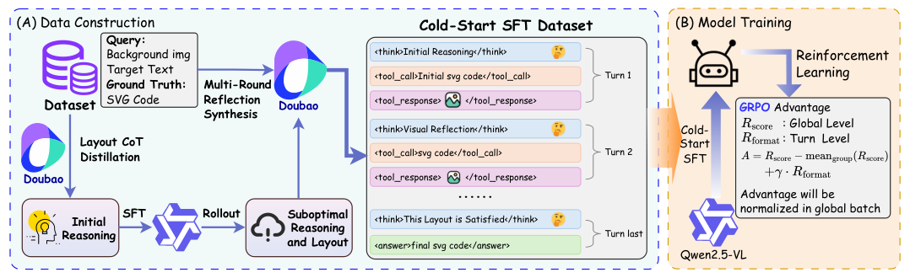
This work aims to develop a self-improving VFLM for text layout generation that optimizes outputs through visual feedback. We achieve this with a two-stage training framework: (1) Cold-Start SFT to instill basic iterative generation and reflection capabilities, and (2) Reinforcement Learning to enhance performance using vision-based reward signals.
As illustrated in Fig. 1, VFLM establishes a multi-round interaction mechanism between VFLM and a rendering environment. As shown in Algorithm 1, given a background image and target text, VFLM executes an iterative generation, rendering, reflection, refinement cycle:
Initial Generation: The VFLM first analyzes the input through reasoning, then generates initial layout code through a structured tool call.
Rendering: The rendering tool converts the SVG code into a visual image and feeds it back to the same VFLM.
Visual Reflection: The VFLM examines the rendered layout visual image through reasoning to evaluate whether the quality is satisfactory to it.
Iterative Refinement: If unsatisfied, the VFLM reasons about necessary modifications and a revised layout code is generated. The process repeats until the model determines satisfaction with the layout quality.
The cold-start SFT stage enables the model to acquire iterative reflection capabilities, and tool usage specifications through distillation from an advanced teacher MLLM.
Data Construction Due to the absence of natural multi-round reflection data, we employ Doubao-Seed-1.6 [5] as a teacher model for data synthesis. As illustrated in Fig. 2(A), the systhesis pipeline is divided into the following stages:
Initial reasoning synthesis: First, The teacher model is prompted with background images and ground-truth layouts to generate the reasoning processes for SVG code generation.
Suboptimal layout generation: This distilled reasoning data is used to fine-tune Qwen2.5-VL-7B. The inference outputs from this model are then collected to serve as the suboptimal initial attempts for the next stage.
Multi-round reflection synthesis: The suboptimal attempts (from Stage 2) are paired with their ground-truth layouts and fed back to the teacher model. The teacher is then instructed to perform iterative reflection and modification to reach the ground-truth solution. This process simulates realistic human design refinement and generates complete multi-round reflection trajectories.
Data combination: Finally, the synthesized data from the above stages are combined and organized using structured tags: intermediate rounds use <think> and <tool_call>, while the final round uses <think> and <answer> (See supplementary materials for specific data samples.).
Training Objective We fine-tune Qwen2.5-VL-7B using causal language modeling on the synthesized multi-round reflection trajectories data. To prevent the model from learning suboptimal outputs, the loss for initial responses in improvement sequences is masked, ensuring the model learns from the correction process rather than initial errors.
We adopt the Group Relative Policy Optimization (GRPO) [40] algorithm for RL and make certain improvements to the advantage function. Compared with traditional policy optimization methods, GRPO performs policy gradient optimization within sample groups, enabling the model to learn in the direction of maximizing rewards. The optimization objectives of GRPO are as follows:
|
|
(1) |
where and are the clipping hyperparameters and the KL divergence penalty coefficient, respectively.
For the reward function, we design a three-component reward function to score the layout effect: (1) (Sec. 3.3.2), a specialized reward model trained to evaluate overall layout quality; (2) , which evaluates text accuracy based on OCR results from the rendered layout; and (3) , which measures text accuracy at the code level by comparing the extracted SVG strings with the target text. The total reward is the weighted sum of the three components:
| (2) |
where balance aesthetic quality against functional accuracy. In addition, we incorporate a format reward to constrain the output format of the model:
| (3) |
For the advantage function, since the multi-round nature of our approach, the format rewards are applied separately in each round, resulting in inconsistent rewards between rounds for a sequence. Referring to REINFORCE++ [16], we use the mean value of within a group as baseline to reshape the reward. The format rewards are then incorporated with a scaling factor . Finally, the advantages in the global batch are normalized and used for GRPO training:
| (4) |
| (5) |
Training a robust reward model for text layout is uniquely challenging. Unlike tasks with binary correctness, layout quality is a holistic and fine-grained judgment of aesthetics, readability, and coherence. A high-quality preference dataset is crucial for training a model that can guide a stable RL without falling into reward hacking. However, no existing datasets or methodologies are specifically designed for layout generation reward modeling. To address this gap, we train a specialized reward model that takes triplets as input and outputs a scalar score , where denotes the background image, denotes the target text, and denotes the rendered layout image.
Dataset: To create the necessary preference data, we introduce a novel hierarchical data construction method that creates fine-grained quality distinctions across multiple layout quality levels.
To equip the reward model with comprehensive and robust evaluation capabilities, we construct four distinct quality levels to capture fine-grained layout performance:
Level-I: High-quality ground-truth layouts serving as gold standards for design excellence.
Level-II: Layouts generated by Qwen2.5-VL-7B after fine-tuning on 200K samples exhibit reasonable quality with minor imperfections.
Level-III: Layouts from the Level-II model subjected to systematic spatial perturbations applied to layout elements, including random positional offsets that moderately compromise design coherence.
Level-IV: Severely degraded layouts stem from the Level-II model under aggressive perturbations, including extensive positional displacement, random font size variations, selective text element deletion, image reference removal, and arbitrary SVG scaling transformations.
This hierarchical construction enables comprehensive preference learning through systematic pairwise comparisons. For each layout generation prompt, we create layouts at all four quality levels, then form all possible pairwise comparisons between different levels. This yields 6 preference pairs per problem, establishing clear quality orderings that capture nuanced distinctions essential for effective reward model training. This strategy forces the reward model to move beyond simple binary (good/bad) judgments and learn the subtle distinctions that separate excellent layouts from merely acceptable ones. The resulting dataset provides a comprehensive and reliable basis for training a highly discerning layout reward model .
Training: The method proposed in [33] is adopted for training the reward model. Specifically, the reward model is initialized with Qwen2.5-VL-3B. To adapt it for preference learning, the final layer is replaced with a linear layer yielding a scalar output. Subsequently, the reward model is trained via the negative log-likelihood loss function:
|
, |
(6) |
where and denote the better-quality and lower-quality images, respectively, in a pairwise comparison.
To provide stable reward values for the RL process, the raw output of is normalized before being used as the final layout reward . Following the practice in [49], we standardize scores using the mean and standard deviation of the test set distribution. This procedure ensures that the reward signal maintains a consistent scale throughout training, which is crucial for effective policy optimization. The final reward is calculated as:
| (7) |
Evaluation Datasets For evaluation, we randomly sample 1K examples from our TextLayout dataset as the primary test set, ensuring no overlap with training data. We also conduct additional experiments on the Crello [50] and DESIGNERINTENTION [22] benchmarks, preprocessed into background-text pairs.
Evaluation metrics We adopt three groups of evaluation metrics. Text accuracy is measured using character-level F-measure based on OCR recognition. For graphic metrics, we adopt , , and [60, 35], which capture text position alignment, text-text overlap, and pixel gradient smoothness within text regions. Additionally, we employ GPT-4o as a judge [14] to evaluate four dimensions: Text Accuracy, Text-Background Harmony, Text Presentation Quality, and Meaning Expression Adaptability. Refer to the supplementary materials for details.
Existing Methods We compare against three categories of existing methods: (1) Advanced MLLMs: GPT-4o [18], Claude 3.7 [2], Doubao-Seed-1.6[5], and Qwen2.5-VL-72B [4]; (2) Image editing models: GPT-4o(edit) [18], Qwen-Image-Edit [48], and FLUX-Kontext [23]; (3) Specialized layout generation: the open-source domain-specific model OpenCOLE [20] and IGD [35].
| Method | Model | OCR | Graphic | GPT-4o | |||||||
| Char-F | RM Score | Text | Harmony | Quality | Meaning | Overall | |||||
| TextLayout | |||||||||||
| MLLM | GPT-4o | 0.8258 | 0.0046 | 0.0033 | 18.8443 | 0.3561 | 8.5165 | 8.0341 | 7.2826 | 7.6553 | 7.8721 |
| Claude3.7 | 0.8672 | 0.0053 | 0.0383 | 16.4401 | 0.5295 | 8.8058 | 8.4026 | 7.7691 | 8.2651 | 8.3106 | |
| Doubao-Seed-1.6 | 0.8484 | 0.0058 | 0.0216 | 18.5823 | 0.4063 | 8.5663 | 8.2304 | 7.4463 | 7.8917 | 8.0337 | |
| Qwen2.5-VL-72B | 0.7178 | 0.0031 | 0.0358 | 19.9399 | 0.1989 | 7.8633 | 7.6094 | 6.5402 | 6.5582 | 7.1428 | |
| Qwen2.5-VL-7B | 0.6195 | 0.0029 | 0.0229 | 25.7715 | 0.1166 | 7.5638 | 6.4431 | 5.4827 | 5.3861 | 6.5489 | |
| Image Edit | GPT-4o | 0.7198 | - | - | - | 0.3371 | 7.4809 | 8.9298 | 8.1672 | 8.1919 | 8.1924 |
| Qwen-Image-Edit | 0.7256 | - | - | - | 0.3062 | 5.4086 | 7.7783 | 6.1886 | 6.0040 | 6.3449 | |
| FLUX Kontext | 0.1322 | - | - | - | -0.5853 | 1.6473 | 6.8098 | 3.6345 | 2.2142 | 3.5765 | |
| Layout | OpenCOLE | 0.2147 | 1.2029 | 0.0316 | 25.1150 | 0.0397 | 2.6596 | 6.3873 | 3.7020 | 2.8896 | 3.9096 |
| IGD | 0.8481 | 0.0057 | 0.0114 | 14.8597 | 0.3646 | 8.4324 | 7.8125 | 7.3055 | 7.6894 | 7.8100 | |
| VFLM-step1 | 0.9071 | 0.0035 | 0.0059 | 15.4583 | 0.5415 | 8.8880 | 8.3591 | 7.7255 | 8.2896 | 8.3155 | |
| VFLM | 0.9376 | 0.0039 | 0.0009 | 11.8678 | 0.6018 | 9.0447 | 8.7492 | 7.9679 | 8.5969 | 8.5897 | |
| Ours | (vs step1) | +0.0305 | -0.0004 | +0.005 | +3.5905 | +0.0603 | +0.1567 | +0.3901 | +0.2424 | +0.3073 | +0.2742 |
| Crello | |||||||||||
| MLLM | GPT-4o | 0.9101 | 0.0017 | 0.0036 | 19.9216 | 0.4427 | 8.9612 | 7.9949 | 7.5237 | 7.9618 | 8.1104 |
| Claude3.7 | 0.8610 | 0.0058 | 0.0205 | 21.0798 | 0.5880 | 8.9645 | 8.3805 | 7.8999 | 8.4507 | 8.4239 | |
| Doubao-Seed-1.6 | 0.8758 | 0.0051 | 0.0192 | 21.5918 | 0.4876 | 8.8927 | 8.2174 | 7.6658 | 8.2569 | 8.2582 | |
| Qwen2.5-VL-72B | 0.8115 | 0.0044 | 0.0619 | 24.6138 | 0.2359 | 7.7332 | 7.4732 | 6.5589 | 6.5405 | 7.0764 | |
| Qwen2.5-VL-7B | 0.7620 | 0.0028 | 0.0256 | 30.9031 | 0.2116 | 7.6289 | 6.2840 | 5.5726 | 5.5813 | 6.2667 | |
| Image Edit | GPT-4o | 0.8774 | - | - | - | 0.5849 | 8.8438 | 9.0127 | 8.8051 | 9.0069 | 8.9171 |
| Qwen-Image-Edit | 0.8326 | - | - | - | 0.3671 | 5.7509 | 7.2808 | 6.0635 | 5.9903 | 6.2714 | |
| FLUX Kontext | 0.5558 | - | - | - | -0.0834 | 3.2447 | 6.6992 | 4.5005 | 4.1499 | 4.6486 | |
| Layout | OpenCOLE | 0.6411 | 1.1902 | 0.0429 | 31.5831 | 0.3345 | 6.9777 | 7.3864 | 6.4068 | 6.5319 | 6.8257 |
| IGD | 0.8853 | 0.0128 | 0.0182 | 20.2092 | 0.3959 | 8.3001 | 7.5402 | 6.9126 | 7.4004 | 7.5383 | |
| VFLM-step1 | 0.8774 | 0.0046 | 0.0061 | 19.5917 | 0.4392 | 8.2334 | 7.9055 | 7.2046 | 7.6543 | 7.7494 | |
| VFLM | 0.9256 | 0.0025 | 0.0022 | 14.8063 | 0.5548 | 8.8260 | 8.5957 | 7.7267 | 8.2964 | 8.3562 | |
| Ours | (vs step1) | +0.0482 | +0.0021 | +0.0039 | +4.7854 | +0.1156 | +0.5926 | +0.6902 | +0.5221 | +0.6421 | +0.6068 |
| DESIGNERINTENTION | |||||||||||
| MLLM | GPT-4o | 0.9563 | 0.0015 | 0.0140 | 18.7249 | 0.5072 | 9.5180 | 8.2725 | 8.0200 | 8.4820 | 8.5731 |
| Claude3.7 | 0.8753 | 0.0070 | 0.0601 | 15.0869 | 0.6465 | 9.5815 | 8.5473 | 8.2052 | 8.8229 | 8.7892 | |
| Doubao-Seed-1.6 | 0.8917 | 0.0046 | 0.0222 | 15.7470 | 0.5103 | 9.1440 | 8.0020 | 7.7400 | 8.2960 | 8.2955 | |
| Qwen2.5-VL-72B | 0.5475 | 0.0069 | 0.1649 | 17.8489 | 0.3104 | 4.1891 | 7.7565 | 6.8813 | 4.4970 | 5.8310 | |
| Qwen2.5-VL-7B | 0.6694 | 0.0011 | 0.0689 | 19.1119 | 0.2018 | 7.3688 | 6.1285 | 5.6576 | 5.4498 | 6.1512 | |
| Image Edit | GPT-4o | 0.8832 | - | - | - | 0.6278 | 9.5231 | 8.9287 | 9.0126 | 9.2558 | 9.1800 |
| Qwen-Image-Edit | 0.8518 | - | - | - | 0.5995 | 7.1626 | 7.7435 | 7.2625 | 7.1403 | 7.3272 | |
| FLUX Kontext | 0.5412 | - | - | - | 0.4426 | 4.3908 | 7.2806 | 5.4208 | 5.1503 | 5.5606 | |
| Layout | OpenCOLE | 0.7308 | 0.6848 | 0.0408 | 20.2853 | 0.4684 | 8.4738 | 7.3488 | 6.9516 | 7.4435 | 7.5544 |
| IGD | 0.9283 | 0.0115 | 0.0065 | 14.5905 | 0.5349 | 8.8112 | 7.7505 | 7.4449 | 7.8677 | 7.9686 | |
| VFLM-step1 | 0.9415 | 0.0033 | 0.0023 | 14.1230 | 0.5285 | 9.4020 | 8.1924 | 7.8640 | 8.3260 | 8.4461 | |
| VFLM | 0.9663 | 0.0024 | 0.0008 | 12.1167 | 0.5688 | 9.5569 | 8.4511 | 7.9301 | 8.5130 | 8.6128 | |
| Ours | (vs step1) | +0.0248 | +0.0009 | +0.0015 | +2.0063 | +0.0403 | +0.1549 | +0.2587 | +0.0661 | +0.1870 | +0.1667 |
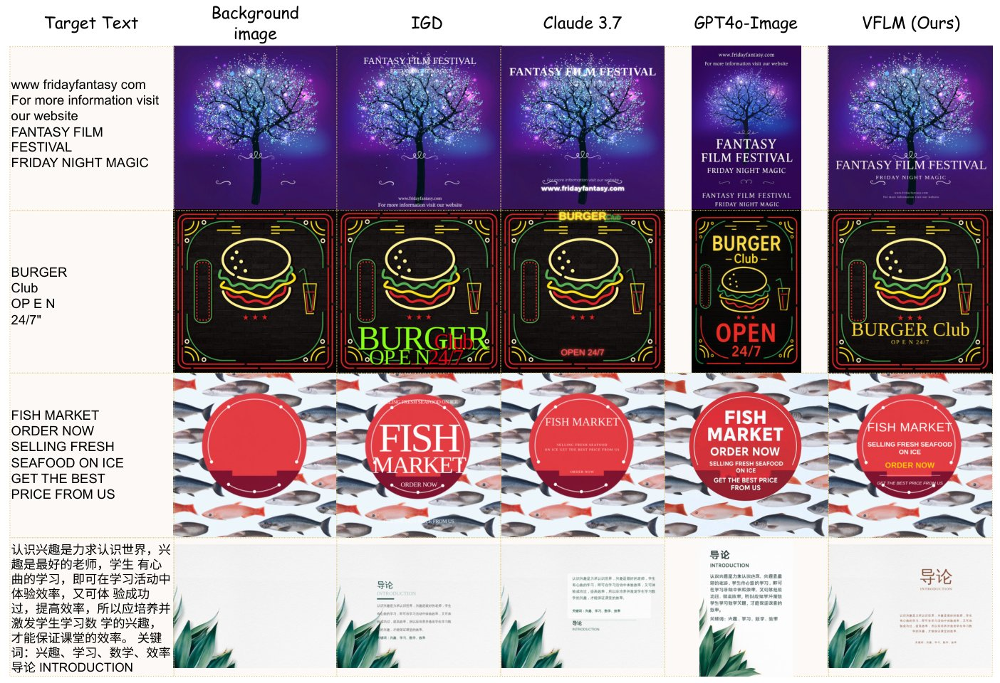
As shown in Tab. 1, VFLM demonstrates a clear quantitative advantage. On the TextLayout dataset, VFLM’s initial generation (VFLM-step1) already achieves a higher OCR F1-score (0.9071) than the strongest MLLM competitor, Claude 3.7 (0.8672), and the specialized layout model IGD (0.8481). The final optimized output (VFLM) widens this gap further to 0.9376. This superiority extends across key graphic metrics: VFLM excels at minimizing element overlap () and optimizing composition (), achieving the highest RM scores and overall GPT-4o evaluation. This strong performance generalizes robustly: VFLM consistently achieves state-of-the-art results on the Crello and DESIGNERINTENTION datasets, establishing a new SOTA on nearly all OCR and Graphic metrics.
Fig. 3 provides a qualitative comparison of VFLM against existing methods. Models like IGD and Claude 3.7, which generate layouts directly, inevitably suffer from visual artifacts such as text overlap and color conflicts. Meanwhile, image editing models like GPT4o-Image fundamentally conflict with our task, as they inevitably alter the background image. These editing models also struggle to guarantee quality in scenarios with dense text or Chinese characters. VFLM, in contrast, successfully integrates the element-wise consistency of code generation while further leveraging visual feedback to promptly discover and correct visual problems. This ensures a high-quality final output, overcoming the limitations of both competing approaches.
The trained reward model achieves a high pairwise prediction accuracy of 97.4% on the preference data test set. To further validate our methodology, we conducted two key analyses presented in Tab. 2. First, we verify the integrity of our four-level data hierarchy using objective metrics. As shown, the external Graphic and OCR metrics exhibit a clear monotonic degradation from Level-I to Level-IV. Among them, and have slight improvement in Leval-III and Leval-IV because many texts in these two types of data have been lost in the layout, so text overlap and regional gradients will naturally decrease. This result confirms that our data construction process successfully creates a well-defined and reliable quality gradient.
| level | OCR | Graphic | RM Score | ||
|---|---|---|---|---|---|
| Char-F | |||||
| Level-I | 0.9474 | 0.0089 | 0.0038 | 6.6795 | 1.0594 |
| Level-II | 0.9049 | 0.0112 | 0.0134 | 12.2626 | 0.6343 |
| Level-III | 0.5657 | 0.0354 | 0.0444 | 21.2628 | -0.2345 |
| Level-IV | 0.5324 | 0.0536 | 0.0375 | 17.5270 | -1.3457 |
Second, we evaluated whether our trained reward model internalizes this quality structure. The final column of the table reports the average RM Score, i.e., , which aligns well with the established hierarchy, decreasing consistently from a high for Level-I to a low for Level-IV. This strong discriminative performance across distinct quality levels confirms that our model has learned a nuanced understanding of layout quality, enabling it to provide a reliable and effective supervision signal for reinforcement learning.
In the ablation study, we conducted comparative experiments using TextLayout test set. To comprehensively compare the effects of our visual feedback method, we compared it against several training approaches: (1) Cold-Start Model: The cold start model mainly ensures the format of the iterative output and does not significantly improve the layout quality; (2) Single-Round RL: We trained the cold-start model using RL but restricted generation to only one step, enabling fair comparison between single-round generation and iterative visual reflection; (3) RL from Pre-trained Models: Direct RL training from the pre-trained Qwen2.5-VL-7B model without SFT initialization; (4) Direct Output: SFT+RL training was performed using the same source data as our visual feedback method for direct SVG code generation; (5) Direct Output SFT: For fair comparison with our 40K-sample SFT+RL approach, we trained a direct SFT model on 40K samples. Since these models only require a single round of generation training, we use the standard SFT loss and GRPO Advantage calculation method. For more ablation experiments on reward functions and advantage algorithms, as well as training details, please refer to the supplementary materials.
| Model | OCR | Graphic | RM Score | ||
| Char-F | |||||
| VFLM-step1 | 0.9071 | 0.0035 | 0.0059 | 15.4583 | 0.5415 |
| VFLM | 0.9376 | 0.0039 | 0.0009 | 11.8678 | 0.6018 |
| Cold-Start-step1 | 0.7913 | 0.0078 | 0.0297 | 19.0560 | 0.2572 |
| Cold-Start | 0.7980 | 0.0081 | 0.0298 | 19.0577 | 0.2608 |
| Single-Round RL | 0.8792 | 0.0024 | 0.0053 | 18.9428 | 0.4063 |
| RL from Pretrained | 0.8154 | 0.0003 | 6.7109 | 22.0273 | 0.2971 |
| Direct Output | 0.9237 | 0.0027 | 0.0021 | 17.0654 | 0.4964 |
| Direct Output SFT | 0.8551 | 0.0040 | 0.0153 | 12.9459 | 0.5332 |
The results of our ablation study, presented in Tab. 3, demonstrate the clear superiority of our Visual Feedback method. Our VFLM achieves the best performance across the majority of metrics, substantially outperforming all RL baselines. More notably, the quality of our initial output (VFLM-step1) is already not inferior to any other competing methods. For instance, its RM score of 0.5415 even surpasses the second-best performing Direct Output SFT (0.5332). Subsequent iterative steps further widened this performance gap, increasing the RM score to 0.6018, and achieving top-notch results in both OCR and image quality. Our success highlights that our visual feedback framework is a more effective solution for layout generation, as it can establish a higher quality benchmark from the very first step and then optimize it to the state-of-the-art level.
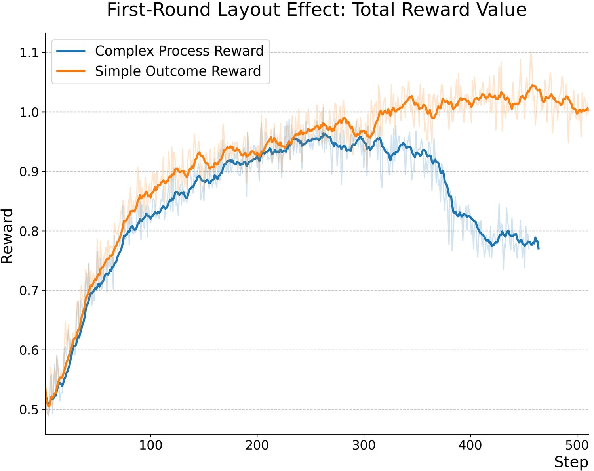
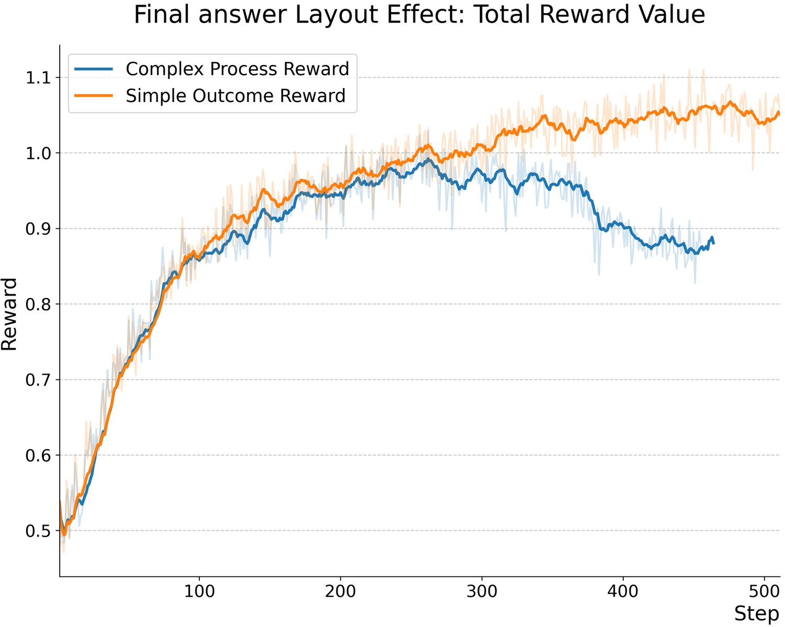
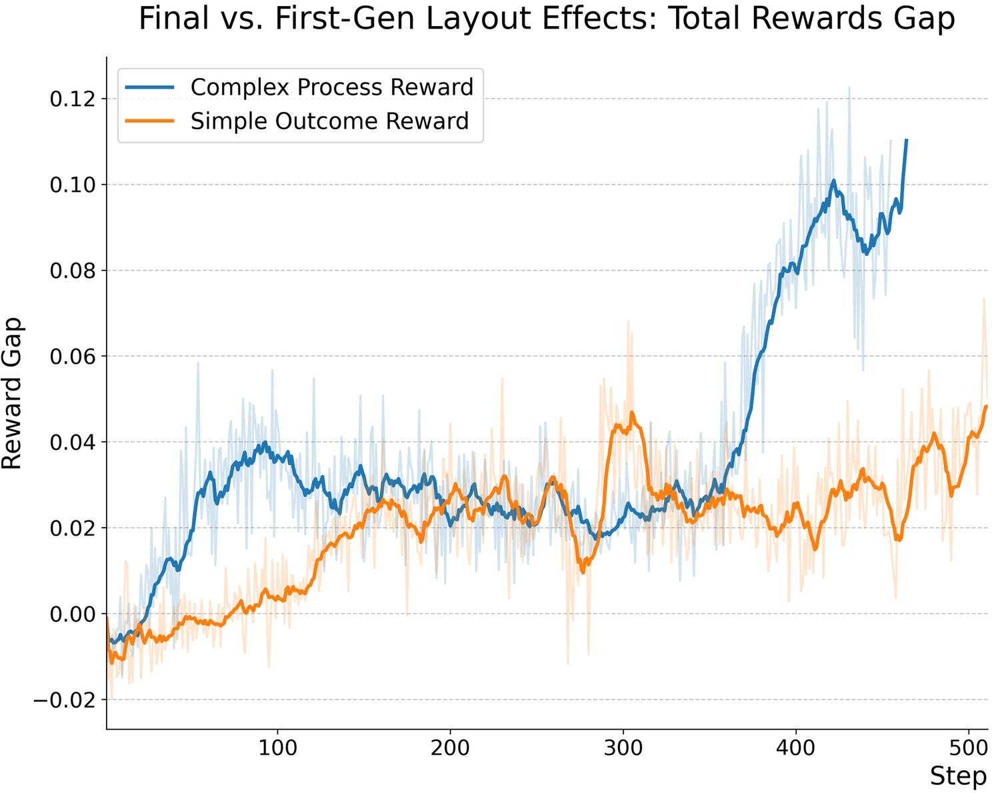
Can simple outcome-based rewards effectively stimulate self-improvement capabilities in MLLMs? Our empirical investigation provides compelling evidence that they can, and even outperform more sophisticated alternatives.
We designed a sophisticated process-oriented reward function (Eq. 8–Eq. 10). This complex reward scheme incorporates three distinct optimization objectives: (1) first-round quality maximization using group-wise mean baselines, (2) iterative improvement encouragement via maximum-quality baselines from prior rounds, and (3) strategic termination control via reward and length penalties to prevent reward hacking. Subsequent advantages will be normalized through Eq. 5.
| (8) |
where represents a complete generation path, and represents the response of the -th round in this complete path. The terminal reward () components are defined as:
| (9) |
| (10) |
Fig. 4 illustrates the training dynamics of the two reward schemes. Before 250 steps, both algorithms improved stably: their final answer scores (middle subfigure) showed nearly identical trends, and first-round generation performance was comparable, the outcome-only reward algorithm even slightly outperform the complex process RL one. After 250 steps, the process RL converged and even suffered performance degradation, whereas the outcome-only reward continued to improve steadily until training concluded. The reward gap (right subfigure) reveals that process RL quickly widened this gap but plateaued later, which is likely due to restricted first-round learning in early training. In contrast, the outcome-only reward gradually mastered progressive iterative refinement. Tab. 4 quantifies these observations through comprehensive evaluation metrics. The simple outcome-based reward demonstrates superior effectiveness in stimulating self-improvement capabilities across all evaluation dimensions.
| OCR | Graphic | ||||
|---|---|---|---|---|---|
| level | Char-F | RM Score | |||
| Outcome RL-step1 | 0.9071 | 0.0035 | 0.0059 | 15.4583 | 0.5415 |
| Outcome RL | 0.9376 | 0.0039 | 0.0009 | 11.8678 | 0.6018 |
| (vs step1) | +0.0305 | -0.0004 | +0.005 | +3.5905 | +0.0603 |
| Process RL-step1 | 0.9032 | 0.0053 | 0.0030 | 16.6528 | 0.4936 |
| Process RL | 0.9239 | 0.0052 | 0.0027 | 16.4220 | 0.5241 |
| (vs step1) | +0.0207 | +0.0001 | +0.0003 | +0.2308 | +0.0305 |
These findings reveal a fundamental insight: under effective visual feedback mechanisms, simple outcome-based rewards can successfully harness the inherent visual understanding capabilities of MLLMs to elicit robust self-improvement behaviors, while complex process-oriented rewards may actually inhibit optimal performance, leading to the brittle local optima and “reward hacking” (policy collapse) observed in Fig. 4. This counterintuitive result suggests that the powerful internal representations and reasoning capabilities of modern MLLMs, when properly guided by clear outcome objectives and visual feedback, can autonomously develop sophisticated iterative refinement strategies without explicit process supervision.
This paper introduces VFLM, a self-improving framework for text layout design, bridging the critical “visual perception gap” of existing code-only methods. We implement a “generation, rendering, reflection, refinement” loop, which is trained via RL that leverages a novel, specialized layout reward model. A key finding is that rewarding only the final outcome, rather than complex intermediate steps, can more effectively stimulate the model’s self-improvement capabilities. Extensive experiments validate that VFLM consistently outperforms code-only methods, establishing visual feedback as essential for automated design and MLLM-based design agents.
This work is supported by the the National Nature Science Foundation of China (62425114, 62121002, U23B2028), and the Fundamental and Interdisciplinary Disciplines Breakthrough Plan of the Ministry of Education of China (JYB2025XDXM103).
Supplementary Material
We collected approximately 200K samples, including free and paid data from the internet. Each sample contains a background image, target text, well-formatted SVG code, and the corresponding rendered image. Each sample has an average of 9.8 text boxes, with an average text length of 84.7. Fig. 5 is a data example. Based on these data, our training and testing data were constructed, including the dataset for the Cold-Start SFT phase, the queries for the reinforcement learning phase, the training and testing datasets for the reward model, and finally, the dataset used for evaluation.
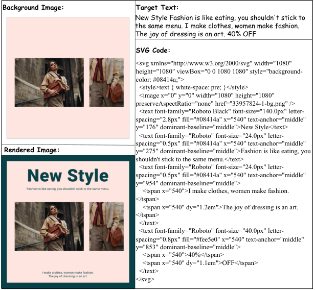
We use the method described in the main text and set the maximum number of modifications to 3 during the data generation process. Since each data trajectory includes an initial generation and a final ”satisfied” output, the total number of turns is the number of modifications plus two. This process yielded a total of 8K trajectories, comprising 2,359 two-turn samples (0 modifications), 1,266 three-turn samples (1 modification), 2,030 four-turn samples (2 modifications), and 2,537 five-turn samples (3 modifications). Total data volume is 8K.
Herein, a qualitative comparison of data across the four quality levels (Level-I, Level-II, Level-III, Level-IV) is presented. These four levels exhibit distinct differences in typesetting quality: Level-I demonstrates the best typesetting quality, while Level-IV, by contrast, shows the worst.
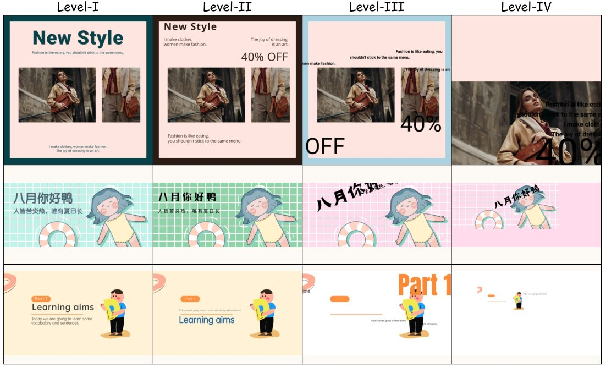
All experiments are conducted on a cluster of 16 NVIDIA H200 GPUs. For the Cold-Start SFT stage, we trained the model with 8k data for 2 epochs with a learning rate of and a batch size of 64. During this stage, the image max_pixels was set to .
For the RL stage, we set the maximum number of tool calls to 4. The weights for and (denoted as ) were set to 0.25, while the weight for was set to 0.1. We prepare up to 32K samples for training, with early stopping based on reward metrics during RL training. We employed a strict on-policy training strategy with the following configuration: batch size of 64, 8 rollouts per sample, sampling temperature of 1.0, KL divergence coefficient of 1e-3, and learning rate of 1e-6.
We trained the reward model on a preference dataset constructed from 200K layout samples. Four quality levels (Level-I, Level-II, Level-III, Level-IV) were generated for each query, yielding 1.2M preference pairs. We randomly select 25K pairs as the test set, using the remainder for training. During training, we use a batch size of 512 and train for 2100 steps.
In the ablation experiments, Single-Round RL, RL from Pretrained, and Direct Output adopt the same hyperparameter configuration as VFLM. For Direct Output SFT, 40k samples are used for SFT, with a batch size of 128, a learning rate of 1e-5, and training conducted for 2 epochs.
We use an OCR engine11 1 https://github.com/PaddlePaddle/PaddleOCR to recognize text in design images and evaluate the accuracy of rendered text using character-level f-measure. In the RL reward function, and are evaluated using accuracy. Specifically, a character in the OCR recognition result is defined as a True Positive (TP) if it appears in the annotation; otherwise, it is classified as a False Positive (FP). A False Negative (FN) indicates that a character is only present in the annotation but absent from the OCR recognition result. Accordingly, character-level precision, recall, f-measure and accuracy can be formulated as follows:
| (11) | ||||
For the GPT4o evaluation, we assess the effect along four dimensions: Text Accuracy, Text-Background Harmony, Text Presentation Quality, and Meaning Expression Adaptability. The evaluation prompt is shown in prompt 5. Fig. 7 is a detailed evaluation sample.
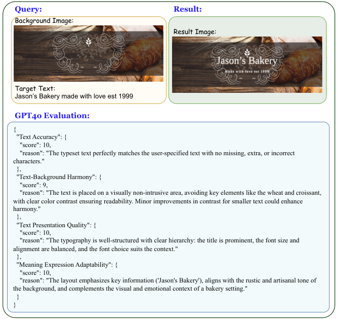
The VFLM system prompt is shown in prompt 5, includes tool definitions and task descriptions.
The system prompt of MLLM models, as shown in prompt 5, only omits the definition of tools and the statement of multi-round responses compared with that of VFLM.
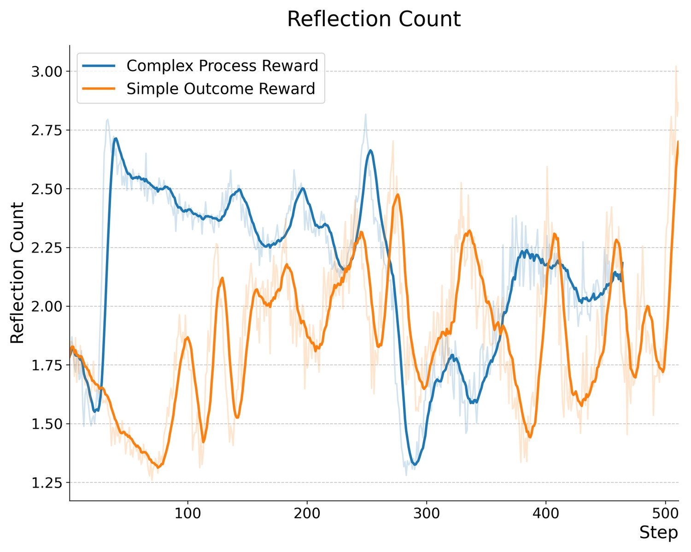
Fig. 8 illustrates the dynamic evolution of reflection counts during training. While the complex process reward employs strategic termination control (Eq. (9)-Eq. (10)) to enforce stability, VFLM under the simple outcome reward exhibits a distinct, insightful trajectory. Specifically, in the initial phase (the first 100 steps), we observe a decline in reflection turns. Combining with Fig. 4, we can analyze this is attributed to the model’s initial instability in output formatting, where iterative attempts often degraded quality compared to the initial generation, prompting the model to curtail its reasoning depth. However, beyond 100 steps, as the output format stabilizes, the model discovers that iterative optimization yields superior rewards. Consequently, the reflection count begins to fluctuate and rise, reflecting the model’s autonomous realization that deeper reflection correlates with better layout quality, rather than relying on rigid, pre-defined constraints.
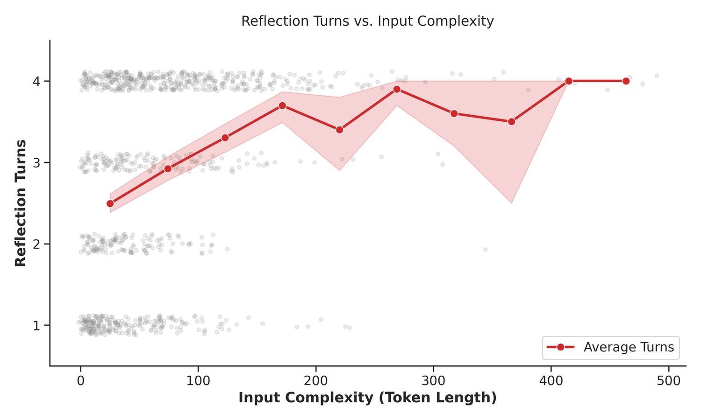
To further analyze the number of reflection rounds VFLM performs, we examined the correlation between input complexity (measured by the token length of the Target Text) and the number of reasoning rounds. As shown in Figure Fig. 9, which presents the model outputs of 1000 samples from VFLM on the TextLayout test set, the gray scatter points depict the raw distribution of inference steps, which are inherently discrete integers. To visualize the underlying trend amidst this variance, the red solid line tracks the average reflection turns across complexity intervals. A clear positive trend is observable: for concise inputs ( tokens), the model efficiently converges with fewer refinement steps (averaging 2.5 turns). In contrast, as input complexity increases to over 400 tokens, the model adaptively increases its reasoning depth, approaching the maximum of 4 turns. This confirms that VFLM actively perceives layout difficulty and allocates computational resources accordingly.
To further enhance evaluation reliability, we supplement our analysis with a blind human study involving 16 participants, who evaluated outputs from Claude3.7, GPT4o-Image, OpenCOLE, and VFLM on three dimensions across 320 randomly selected queries from three datasets. A total of 960 votes were collected. As shown in the Figure 10, VFLM performed comparably to GPT4o-Image on text coordination and achieved the best results in text accuracy and overall aesthetics.
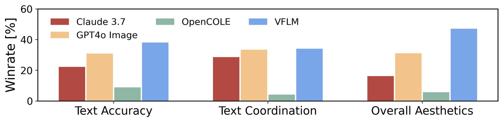
As shown in Figure 11, we report the average inference time of VFLM, OpenCOLE, and IGD on the TextLayout test set using 4×4090 GPUs. Although VFLM has the highest latency, it yields substantial performance gains.
| Model | Char-F | RM Score | |||
|---|---|---|---|---|---|
| OpenCOLE* | 0.7671 | 0.7114 | 0.0143 | 21.8279 | 0.3620 |
| VFLM | 0.9071 | 0.0035 | 0.0059 | 15.4583 | 0.5415 |
| Qwen2.5-VL-7B-feedback | 0.6830 | 0.0025 | 0.0188 | 28.8221 | 0.0910 |
| GPT-4o-feedback | 0.8494 | 0.0039 | 0.0028 | 20.8852 | 0.3662 |
The table above shows the results of OpenCOLE trained on the same training set as VFLM. Although retraining brings substantial improvements over the original OpenCOLE, it still underperforms VFLM. We further integrate visual feedback into GPT-4o and Qwen2.5-VL-7B baselines. As shown in the table, without task-specific training, introducing visual feedback to MLLMs yields only marginal gains, with some metrics even showing slight declines.
| Model | OCR | Graphic | RM Score | ||
|---|---|---|---|---|---|
| Char-F | |||||
| VFLM-step1 | 0.8774 | 0.0046 | 0.0061 | 19.5917 | 0.4392 |
| VFLM | 0.9256 | 0.0025 | 0.0022 | 14.8063 | 0.5548 |
| Cold-Start-step1 | 0.7904 | 0.0118 | 0.0410 | 24.3143 | 0.2721 |
| Cold-Start | 0.7928 | 0.0121 | 0.0402 | 24.0888 | 0.2774 |
| Single-Round RL | 0.8829 | 0.0010 | 0.0094 | 24.4845 | 0.4007 |
| RL from Pretrained | 0.8792 | 0.0004 | 0.0012 | 30.3397 | 0.3482 |
| Direct Output | 0.9092 | 0.0009 | 0.0022 | 19.3983 | 0.4596 |
| Direct Output SFT | 0.8960 | 0.0032 | 0.0192 | 18.3754 | 0.4680 |
| Model | OCR | Graphic | RM Score | ||
|---|---|---|---|---|---|
| Char-F | |||||
| VFLM-step1 | 0.9415 | 0.0033 | 0.0023 | 14.1230 | 0.5285 |
| VFLM | 0.9663 | 0.0024 | 0.0008 | 12.1167 | 0.5688 |
| Cold-Start-step1 | 0.8860 | 0.0130 | 0.0264 | 17.5229 | 0.3784 |
| Cold-Start | 0.8881 | 0.0127 | 0.0257 | 16.9280 | 0.3850 |
| Single-Round RL | 0.9382 | 0.0006 | 0.0033 | 16.7466 | 0.4768 |
| RL from Pretrained | 0.9430 | 0.0005 | 0.0001 | 18.0272 | 0.4692 |
| Direct Output | 0.9590 | 0.0005 | 0.0010 | 14.6338 | 0.5167 |
| Direct Output SFT | 0.9434 | 0.0017 | 0.0082 | 13.1702 | 0.5398 |
Tab. 6 and Tab. 7 demonstrate the metrics of all models in the ablation experiments on the Crello and DESIGNERINTENTION test sets. Consistent with the conclusions in the TextLayout dataset, VFLM also achieves significant advantages over other baselines on these two datasets, fully demonstrating the generalization ability of our visual feedback method.
In our RL training process, the score for layout performance () from the reward model and two rewards based on text accuracy:
| (12) |
We perform ablation to investigate whether using only from the reward model is effective. To save validation time, tests are conducted on the models of the two ablation experiments: Single-Round RL and Direct Output.
| Model | OCR | Graphic | RM Score | ||
|---|---|---|---|---|---|
| Char-F | |||||
| Single-Round RL | 0.8792 | 0.0024 | 0.0053 | 18.9428 | 0.4063 |
| Single-Round RL-w/o OCR | 0.8696 | 0.0024 | 0.0054 | 20.0621 | 0.4153 |
| Direct Output | 0.9237 | 0.0027 | 0.0021 | 17.0654 | 0.4964 |
| Direct Output-w/vo OCR | 0.9146 | 0.0026 | 0.0059 | 16.6961 | 0.5039 |
The results are presented in Tab. 8. It can be observed from the table that the two models exhibit little difference in RL training performance with and without the and rewards, with many metrics being relatively close. Since and have low computational costs and the task essentially involves text typesetting, these two reward functions are retained in the final training of VFLM.
Fig. 12 presents a detailed case generated by VFLM. The SVG initially produced by VFLM exhibits several obvious issues in terms of rendering effect; for instance, the main title ”Merry Christmas” is too large and overlaps with the silhouette of the castle. After receiving visual feedback from the rendered image, it can be observed from the model’s reasoning content (highlighted in the figure) that the model identified these problems and implemented appropriate improvements. Following the second round of visual feedback, the model deemed the current layout satisfactory and output it to user as the final result. Fig. 13 is another case.
Fig. 14 show the more output cases of VFLM. Fig. 15 and Fig. 16 demonstrate the comparison between VFLM and all other models.
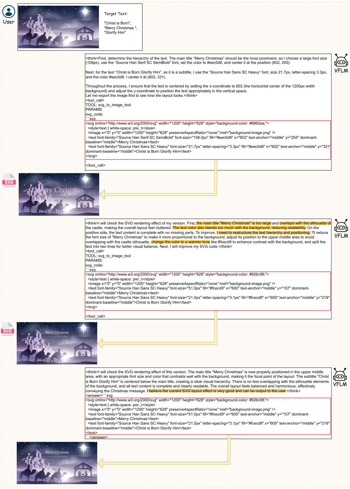
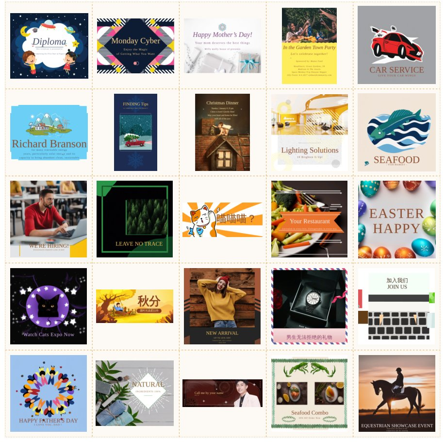
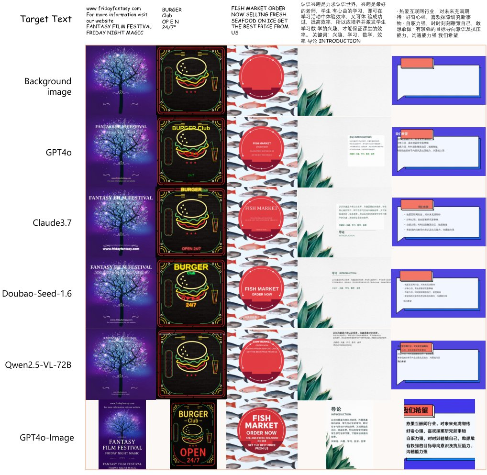
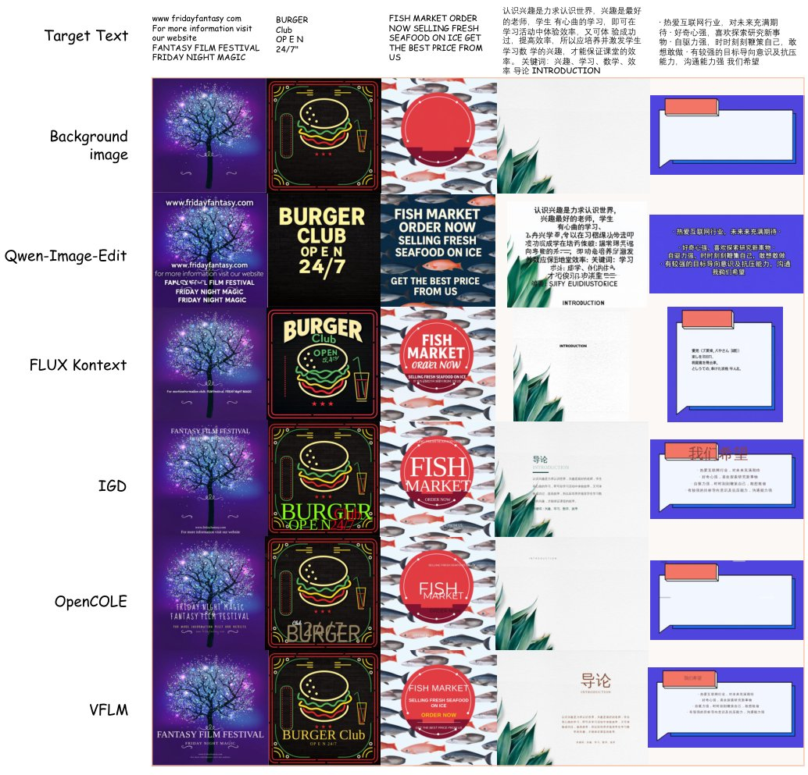